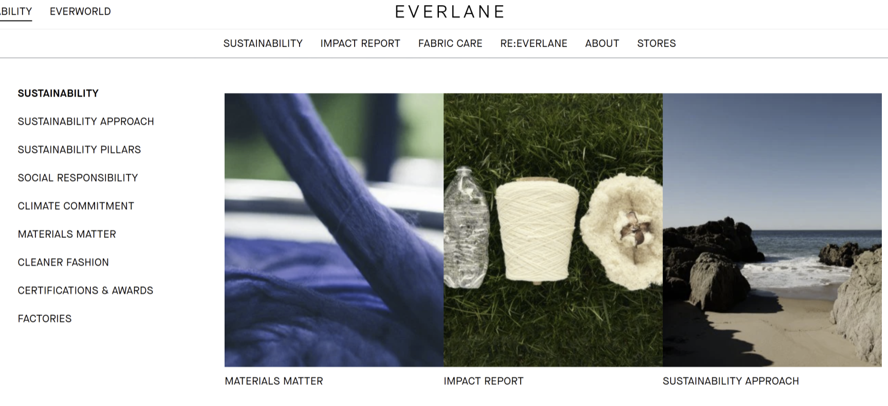
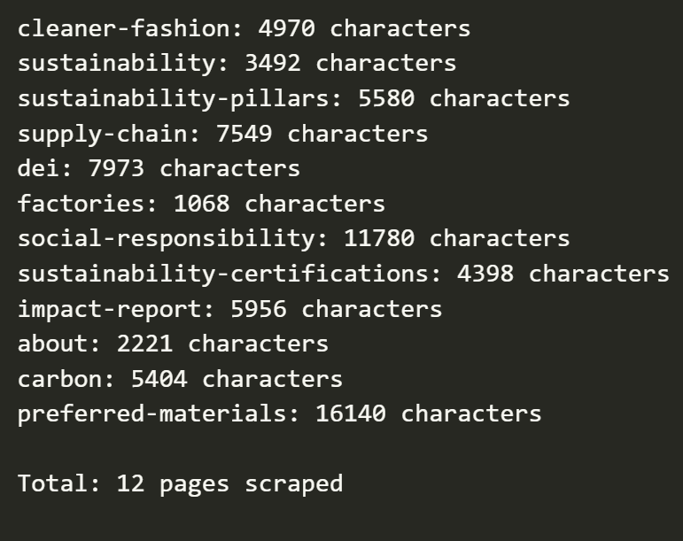
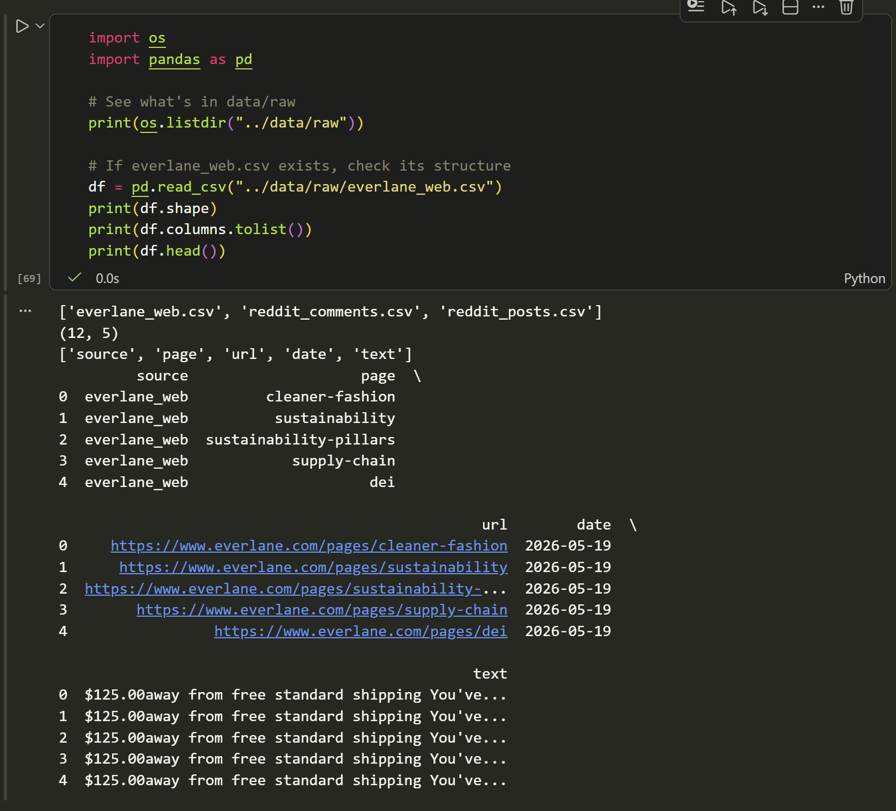
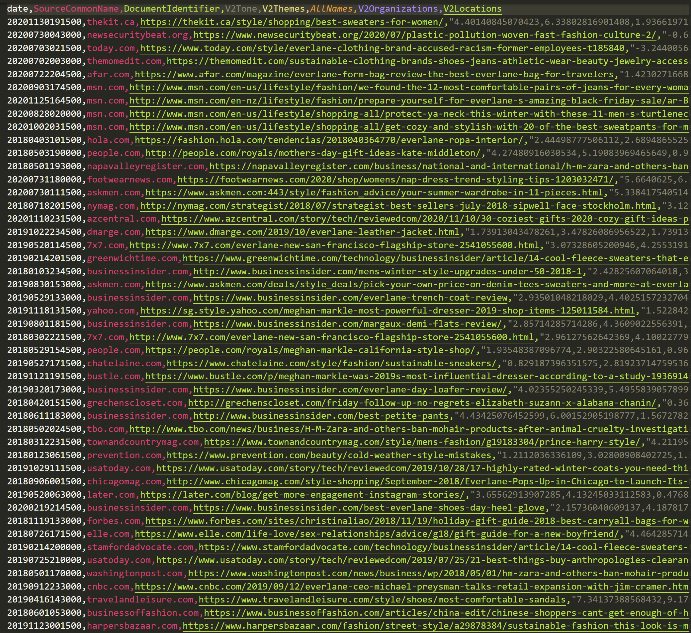

This notebook handles all data collection for my analysis on the fashion brand Everlane, which aims to answer the question: “Has Everlane’s sustainability messaging become more concrete over time, or has it diverged from public perceptions of ethical practice?”
3 distinct sources were scraped to construct a multi-perspective corpus: 1. Reddit crawl: consumer sentiment collected via the PRAW API across five subreddits, filtered for relevance to Everlane as a brand 2. Everlane’s website: brand-controlled content scraped via Selenium and BeautifulSoup across 12 sustainability and company pages, plus 19 individual factory subpages 3. News coverage: journalism pulled from GDELT’s Global Knowledge Graph via BigQuery, with article text fetched using newspaper3k
The scraping choices here reflect a deliberate tradeoff: Reddit gives us unfiltered consumer opinions, the Everlane site gives us the brand’s own narrative, and the news corpus gives us third-party mediation between the two. Each source has its own collection logic, data quality checks, and data integrity checks to avoid re-scraping.
The final outputs of this notebook: 3 raw CSV files in data/raw/ that feed directly into the analysis notebooks. - reddit_posts.csv, - reddit_comments.csv, - everlane_web.csv, - and gdelt_articles_usable.csv
Code
# Install all required packagesimport sys!{sys.executable} -m pip install praw requests beautifulsoup4 selenium pandas undetected-chromedriver gdeltdoc newspaper3k lxml_html_clean
Collecting praw
Using cached praw-7.8.1-py3-none-any.whl.metadata (9.4 kB)
Requirement already satisfied: requests in c:\users\micha\appdata\roaming\python\python311\site-packages (2.32.5)
Requirement already satisfied: beautifulsoup4 in c:\users\micha\appdata\roaming\python\python311\site-packages (4.14.2)
Collecting selenium
Downloading selenium-4.44.0-py3-none-any.whl.metadata (7.4 kB)
Requirement already satisfied: pandas in c:\users\micha\appdata\local\programs\python\python311\lib\site-packages (2.3.3)
Collecting prawcore<3,>=2.4 (from praw)
Using cached prawcore-2.4.0-py3-none-any.whl.metadata (5.0 kB)
Collecting update_checker>=0.18 (from praw)
Using cached update_checker-0.18.0-py3-none-any.whl.metadata (2.3 kB)
Requirement already satisfied: websocket-client>=0.54.0 in c:\users\micha\appdata\roaming\python\python311\site-packages (from praw) (1.9.0)
Requirement already satisfied: charset_normalizer<4,>=2 in c:\users\micha\appdata\roaming\python\python311\site-packages (from requests) (3.4.4)
Requirement already satisfied: idna<4,>=2.5 in c:\users\micha\appdata\roaming\python\python311\site-packages (from requests) (3.11)
Requirement already satisfied: urllib3<3,>=1.21.1 in c:\users\micha\appdata\roaming\python\python311\site-packages (from requests) (2.5.0)
Requirement already satisfied: certifi>=2017.4.17 in c:\users\micha\appdata\roaming\python\python311\site-packages (from requests) (2025.11.12)
Requirement already satisfied: soupsieve>1.2 in c:\users\micha\appdata\roaming\python\python311\site-packages (from beautifulsoup4) (2.8)
Requirement already satisfied: typing-extensions>=4.0.0 in c:\users\micha\appdata\local\programs\python\python311\lib\site-packages (from beautifulsoup4) (4.15.0)
Collecting certifi>=2017.4.17 (from requests)
Downloading certifi-2026.4.22-py3-none-any.whl.metadata (2.5 kB)
Collecting trio<1.0,>=0.31.0 (from selenium)
Downloading trio-0.33.0-py3-none-any.whl.metadata (8.5 kB)
Collecting trio-websocket<1.0,>=0.12.2 (from selenium)
Downloading trio_websocket-0.12.2-py3-none-any.whl.metadata (5.1 kB)
Collecting urllib3<3,>=1.21.1 (from requests)
Downloading urllib3-2.7.0-py3-none-any.whl.metadata (6.9 kB)
Requirement already satisfied: numpy>=1.23.2 in c:\users\micha\appdata\local\programs\python\python311\lib\site-packages (from pandas) (1.26.4)
Requirement already satisfied: python-dateutil>=2.8.2 in c:\users\micha\appdata\roaming\python\python311\site-packages (from pandas) (2.9.0.post0)
Requirement already satisfied: pytz>=2020.1 in c:\users\micha\appdata\local\programs\python\python311\lib\site-packages (from pandas) (2026.1.post1)
Requirement already satisfied: tzdata>=2022.7 in c:\users\micha\appdata\roaming\python\python311\site-packages (from pandas) (2025.2)
Requirement already satisfied: six>=1.5 in c:\users\micha\appdata\roaming\python\python311\site-packages (from python-dateutil>=2.8.2->pandas) (1.17.0)
Requirement already satisfied: attrs>=23.2.0 in c:\users\micha\appdata\roaming\python\python311\site-packages (from trio<1.0,>=0.31.0->selenium) (25.4.0)
Collecting sortedcontainers (from trio<1.0,>=0.31.0->selenium)
Downloading sortedcontainers-2.4.0-py2.py3-none-any.whl.metadata (10 kB)
Collecting outcome (from trio<1.0,>=0.31.0->selenium)
Downloading outcome-1.3.0.post0-py2.py3-none-any.whl.metadata (2.6 kB)
Requirement already satisfied: sniffio>=1.3.0 in c:\users\micha\appdata\roaming\python\python311\site-packages (from trio<1.0,>=0.31.0->selenium) (1.3.1)
Requirement already satisfied: cffi>=1.14 in c:\users\micha\appdata\roaming\python\python311\site-packages (from trio<1.0,>=0.31.0->selenium) (2.0.0)
Collecting wsproto>=0.14 (from trio-websocket<1.0,>=0.12.2->selenium)
Downloading wsproto-1.3.2-py3-none-any.whl.metadata (5.2 kB)
Collecting pysocks!=1.5.7,<2.0,>=1.5.6 (from urllib3[socks]<3.0,>=2.6.3->selenium)
Downloading PySocks-1.7.1-py3-none-any.whl.metadata (13 kB)
Requirement already satisfied: pycparser in c:\users\micha\appdata\roaming\python\python311\site-packages (from cffi>=1.14->trio<1.0,>=0.31.0->selenium) (2.23)
Requirement already satisfied: h11<1,>=0.16.0 in c:\users\micha\appdata\roaming\python\python311\site-packages (from wsproto>=0.14->trio-websocket<1.0,>=0.12.2->selenium) (0.16.0)
Using cached praw-7.8.1-py3-none-any.whl (189 kB)
Downloading selenium-4.44.0-py3-none-any.whl (9.7 MB)
---------------------------------------- 0.0/9.7 MB ? eta -:--:--
---------------------------------------- 0.1/9.7 MB 2.9 MB/s eta 0:00:04
-- ------------------------------------- 0.6/9.7 MB 7.1 MB/s eta 0:00:02
---- ----------------------------------- 1.1/9.7 MB 8.4 MB/s eta 0:00:02
------ --------------------------------- 1.7/9.7 MB 9.7 MB/s eta 0:00:01
-------- ------------------------------- 2.0/9.7 MB 9.7 MB/s eta 0:00:01
---------- ----------------------------- 2.5/9.7 MB 9.4 MB/s eta 0:00:01
------------ --------------------------- 2.9/9.7 MB 9.2 MB/s eta 0:00:01
--------------- ------------------------ 3.6/9.7 MB 10.6 MB/s eta 0:00:01
---------------- ----------------------- 4.1/9.7 MB 10.4 MB/s eta 0:00:01
------------------- -------------------- 4.6/9.7 MB 10.2 MB/s eta 0:00:01
-------------------- ------------------- 5.1/9.7 MB 10.1 MB/s eta 0:00:01
----------------------- ---------------- 5.6/9.7 MB 10.6 MB/s eta 0:00:01
------------------------- -------------- 6.3/9.7 MB 10.5 MB/s eta 0:00:01
---------------------------- ----------- 7.0/9.7 MB 11.1 MB/s eta 0:00:01
-------------------------------- ------- 7.8/9.7 MB 11.3 MB/s eta 0:00:01
------------------------------------ --- 8.8/9.7 MB 12.0 MB/s eta 0:00:01
-------------------------------------- - 9.2/9.7 MB 12.1 MB/s eta 0:00:01
---------------------------------------- 9.7/9.7 MB 11.9 MB/s eta 0:00:00
Downloading certifi-2026.4.22-py3-none-any.whl (135 kB)
---------------------------------------- 0.0/135.7 kB ? eta -:--:--
---------------------------------------- 135.7/135.7 kB 7.8 MB/s eta 0:00:00
Using cached prawcore-2.4.0-py3-none-any.whl (17 kB)
Downloading trio-0.33.0-py3-none-any.whl (510 kB)
---------------------------------------- 0.0/510.3 kB ? eta -:--:--
--------------------------------------- 510.3/510.3 kB 16.1 MB/s eta 0:00:00
Downloading trio_websocket-0.12.2-py3-none-any.whl (21 kB)
Using cached update_checker-0.18.0-py3-none-any.whl (7.0 kB)
Downloading urllib3-2.7.0-py3-none-any.whl (131 kB)
---------------------------------------- 0.0/131.1 kB ? eta -:--:--
---------------------------------------- 131.1/131.1 kB ? eta 0:00:00
Downloading outcome-1.3.0.post0-py2.py3-none-any.whl (10 kB)
Downloading PySocks-1.7.1-py3-none-any.whl (16 kB)
Downloading wsproto-1.3.2-py3-none-any.whl (24 kB)
Downloading sortedcontainers-2.4.0-py2.py3-none-any.whl (29 kB)
Installing collected packages: sortedcontainers, wsproto, urllib3, pysocks, outcome, certifi, trio, update_checker, trio-websocket, prawcore, selenium, praw
Attempting uninstall: urllib3
Found existing installation: urllib3 2.5.0
Uninstalling urllib3-2.5.0:
Successfully uninstalled urllib3-2.5.0
Attempting uninstall: certifi
Found existing installation: certifi 2025.11.12
Uninstalling certifi-2025.11.12:
Successfully uninstalled certifi-2025.11.12
Successfully installed certifi-2026.4.22 outcome-1.3.0.post0 praw-7.8.1 prawcore-2.4.0 pysocks-1.7.1 selenium-4.44.0 sortedcontainers-2.4.0 trio-0.33.0 trio-websocket-0.12.2 update_checker-0.18.0 urllib3-2.7.0 wsproto-1.3.2
Note: you may need to restart the kernel to use updated packages.
ERROR: pip's dependency resolver does not currently take into account all the packages that are installed. This behaviour is the source of the following dependency conflicts.
langchain-classic 1.0.3 requires langchain-core<2.0.0,>=1.2.19, but you have langchain-core 0.2.38 which is incompatible.
langchain-classic 1.0.3 requires langchain-text-splitters<2.0.0,>=1.1.1, but you have langchain-text-splitters 0.2.4 which is incompatible.
[notice] A new release of pip is available: 24.0 -> 26.1.1
[notice] To update, run: python.exe -m pip install --upgrade pip
Code
# Standard libraryimport loggingimport osimport sysimport timefrom datetime import date# Dataimport pandas as pd# Reddit APIimport praw# Web scraping — requests + BeautifulSoupimport requestsfrom bs4 import BeautifulSoup# Selenium + undetected-chromedriverimport seleniumfrom selenium import webdriverfrom selenium.webdriver.common.by import Byimport undetected_chromedriver as uc# News / GDELTfrom gdeltdoc import GdeltDoc, Filters, near
1. Scraping data from Reddit view the official API (PRAW)
Potential subreddits of interest, just from a quick and dirty search of “everlane” as a topic into Reddit
The idea is to cast a wide net on subreddits (post-level data) where I see mentions of Everlane and then pick out the top most active subreddits for analysis. This will serve as our public perception baseline, containing messy ground-level opinions that are easy to collect and are data-rich.
Store related
r/everlane
r/everlaneclothing
Fashion sphere
r/ethicalfashion
r/SustainableFashion
r/capsulewardrobe
Gendered fashion communities
r/mensfashion
r/womensfashion
r/malefashionadvice
r/femalefashionadvice
Code
logging.disable(logging.WARNING)# Reddit clientreddit = praw.Reddit( client_id="fVxP3uTGv7IZtZs3jDIhwg", client_secret="3K_S1m8Q7sGM6k1ePwOq9AW8bpCR8Q", user_agent="everlane_analysis by u/Chocobae")print(reddit.read_only)
True
Code
subreddits = ["Everlane", "everlaneclothing", "ethicalfashion", "femalefashionadvice","SustainableFashion", "capsulewardrobe", "malefashionadvice"]rows = []for sub_name in subreddits: subreddit = reddit.subreddit(sub_name)for post in subreddit.search("everlane", limit=200, sort="new"): rows.append({"source": "reddit","subreddit": sub_name,"date": pd.to_datetime(post.created_utc, unit="s"),"title": post.title,"text": post.selftext,"score": post.score,"url": post.url })df_reddit = pd.DataFrame(rows)print(f"Total posts: {len(df_reddit)}")# Count posts per subredditcounts = df_reddit.groupby("subreddit").size().sort_values(ascending=False)print(counts)# # Drop any subreddit with fewer than 20 posts — not enough signal# THRESHOLD = 20# keep = counts[counts >= THRESHOLD].index.tolist()# print(f"\nKeeping: {keep}")# df_reddit = df_reddit[df_reddit["subreddit"].isin(keep)]# print(f"Posts after filtering: {len(df_reddit)}")
# Display subreddit size after scraping to contextualize the post countsfor sub_name in subreddits: sub = reddit.subreddit(sub_name)print(f"r/{sub_name}: {sub.subscribers:,} subscribers")
With just some preliminary EDA of our post-level data, we have a couple of interesting observations…
Both gendered fashion advice subreddits yielded the most posts (hit our 200 post limit), which makes sense considering that the amount of subscribers in each forum is huge relative to the other subreddits
That being said, we could easily hit the 1000 cap on the PRAW API, but we will simply take 200 posts as a precaution to reduce any noise that may come from passing mentions of the store
On the other hand, Everlane’s reddit communities are on the nicher side, so their posts will be weighted more heavily as a direct signal to measure sentiments regarding the store’s development over the past few years
From my domain experience (being an amateur fashion enthusiast), Everlane is a brand whose primary consumer audience is women, so while I would like to choose r/malefashionadvice as part of the signal for analysis, I feel that we can extract the most valid opinions from r/femalefashionadvice
r/capsulewardrobe also doesn’t really make sense for this analysis as it seems like the topic of currating a lifetime wardrobe will be tangentially related to gathering inputs on Everlane as a brand
Code
# Final list of subreddits to keep based on post counts and relevance# Maintain the store related subreddits, but drop the more general fashion ones that have fewer posts specifically about Everlane's clothing practiceskeep = ["Everlane", "everlaneclothing", "ethicalfashion", "SustainableFashion", "femalefashionadvice"]df_reddit = df_reddit[df_reddit["subreddit"].isin(keep)]print(f"Posts after filtering: {len(df_reddit)}")print(df_reddit.groupby("subreddit").size())
# Save posts before making more API calls; data loading for integrity checks and to avoid having to re-scrape if we need to adjust the subreddit filteringdf_reddit.to_csv("../data/raw/reddit_posts.csv", index=False)print("Posts saved.")
Posts saved.
Expanding the posts from our filtered dataframe, we can now take the most relevant comments for our analysis before moving onto the website scraper. This dataframe ends up being about 3x as large as our posts csv.
Code
comment_rows = []skipped =0for i, row in df_reddit.iterrows():# Skip posts pointing to external URLsif"/comments/"notin row["url"]: skipped +=1continue# Extract the post ID from the URL post_id = row["url"].split("/comments/")[1].split("/")[0] submission = reddit.submission(id=post_id)# For now, top-level only, prevents conversational debates/off-topic threads from dominating the dataset# If set to 10, placeholder expansions might be too many API calls and we risk hitting rate limitss submission.comments.replace_more(limit=0) for comment in submission.comments: comment_rows.append({"post_id": post_id,"subreddit": row["subreddit"],"date": pd.to_datetime(comment.created_utc, unit="s"),"text": comment.body,"score": comment.score })# Avoid rate limiting time.sleep(0.5) df_comments = pd.DataFrame(comment_rows)print(f"Skipped {skipped} link posts")print(f"Collected {len(df_comments)} comments")df_comments.head()
I first ran the below check to see if Selenium is needed in the first place. If not, I could save time crawling for nav links with the standard <a> HTML tags. Otherwise, the wait will be neccesary since the nav requires JavaScript to render certain links that are only accessible after JS events are triggered.
Code
url ="https://www.everlane.com/pages/sustainability"response = requests.get(url, headers={"User-Agent": "Mozilla/5.0"})soup = BeautifulSoup(response.text, "html.parser")# Find all internal links on the pagelinks = [a["href"] for a in soup.find_all("a", href=True) if"everlane.com"in a["href"] or a["href"].startswith("/")]print(links[:30])
Bummer, it looks like we need to use Selenium after all. In the screenshot below, none of the links from the dropdown menu in the header were accessible; the BeautifulSoup crawl only included shopping links and missed all of the relevant pages we were looking for. I could hardcode the links in, but that would not be robust to future website updates, and not to mention, cumbersome to do. Also, what better oppurtunity is there to learn Selenium, right?

image.png
Code
options = uc.ChromeOptions()# Using webdriver.Chrome: chrome options for headless browsing and to avoid issues in certain environments (like Docker or CI)# Uncomment to run headlessly or if there's issues with sandboxing or shared memory# options.add_argument("--headless")# --no-sandbox and --disable-dev-shm-usage are Linux/Docker flags; on Windows they're a no-op# options.add_argument("--no-sandbox")# options.add_argument("--disable-dev-shm-usage")options.add_argument("--user-agent=Mozilla/5.0 (Windows NT 10.0; Win64; x64) AppleWebKit/537.36 (KHTML, like Gecko) Chrome/124.0.0.0 Safari/537.36")# Initialize the uc to handle driver installationdriver = uc.Chrome(options=options)# Navigate to the sustainability page and print the title to confirm it loaded correctly; Timed sleep to allow dynamic content to loaddriver.get("https://www.everlane.com/pages/sustainability")time.sleep(8)print(driver.title)
'pip' is not recognized as an internal or external command,
operable program or batch file.
Everlane - Sustainability
Code
# Testing the page source to confirm we got the full HTML content, not a bot-blocking page or an error message# Also print the current URL to confirm we landed where we expecteddriver.get("https://www.everlane.com/pages/sustainability")time.sleep(8)print(len(driver.page_source))print(driver.page_source[:500])print(driver.current_url)if"just a moment"in driver.page_source.lower():raiseRuntimeError("Cloudflare bot protection detected. Consider increasing the sleep time or using a different user agent.")print(driver.title)
That’s sick, the sustainability page pops-up when toggled. Programatically, our page source has multi-million characters, fully JS-rendered HTML, and containes the correct URL. Selenium is working properly and we can now use BeautifulSoup as intended.
Code
# 1. Define target page(s)driver.get("https://www.everlane.com/pages/sustainability")time.sleep(8)# 2. Parse links with BeautifulSoup for the crawling step# We want to find any other pages linked from the sustainability overview that might be relevant, even if we didn't identify them in our initial manual reviewsoup = BeautifulSoup(driver.page_source, "html.parser")found_links = soup.find_all("a", href=True)sustainability_urls =list(set(["https://www.everlane.com"+ a["href"] if a["href"].startswith("/") else a["href"]for a in found_linksif"/pages/"in a["href"] and"everlane.com"notin a["href"].split("/pages/")[0]]))print(f"Found {len(sustainability_urls)} pages:")for url in sustainability_urls:print(url)
Of the 28 pages, the pages containing the keywords below appear to be the most relevant:
Code
# 3. Filter keywords that signal sustainability-relevant pages# Also included "about" to capture the current brand identity and mission statement# These types of pages often contain sustainability-related language even if it's not dedicated to sustainability; again, it's more useful as a temporal baselinekeywords = ["sustain", "impact", "carbon", "factory", "factories", "supply", "social", "dei", "cleaner", "preferred", "certif", "about"]filtered_urls = [ url for url in sustainability_urlsifany(keyword in url.lower() for keyword in keywords)]print(f"Filtered to {len(filtered_urls)} relevant pages:")for url in filtered_urls:print(url)
Using our pages that we found from Selenium x BeautifulSoup, we can now retrieve the store data of Everlane!
Code
web_rows = []for url in filtered_urls: driver.get(url) time.sleep(8)if"just a moment"in driver.page_source.lower():print(f"SKIPPED (Cloudflare): {url}")continue soup = BeautifulSoup(driver.page_source, "html.parser")# 4. Extract all paragraph text paragraphs = soup.find_all("p") text =" ".join([p.get_text(strip=True) for p in paragraphs if p.get_text(strip=True)])# 5. Extract page name from URL for labeling page_name = url.split("/pages/")[-1] web_rows.append({"source": "everlane_web","page": page_name,"url": url,"date": pd.Timestamp.today().strftime("%Y-%m-%d"),"text": text })print(f"{page_name}: {len(text)} characters")# 6. Compile into DataFrame and savedf_web = pd.DataFrame(web_rows)print(f"\nTotal: {len(df_web)} pages scraped")
Note: Actually at this stage, pages started displaying 0 characters even though no Cloudflare skip messages printed. - Root Cause: The driver did not actually load Everlane’s pages to start with - driver.title prints “Just a moment…”, which is Cloudflare’s challenge HTML, not Everlane’s actual content - headless Chrome is detected as a bot, so Cloudflare never actually resolved the challenge, resulting in empty ‘found_links’ and ‘filtered_urls’ - Solution: - The time for rendering JS bumped up from 3s to 8s - Switch out webdriver.Chrome for undetected_chromedriver; this removes automation markers that Cloudflare detects from us
After these fixes, the above outputs had character counts that made sense :)
factories: 1068 characters seems suspiciously low and clicking on that page indeed leads to many subpages that are accessible only through clicking on the images

To get a full picture of Everlane’s follow-through, we still need this info, so I will expand on this and overwrite the factory info
Code
driver.get("https://www.everlane.com/pages/factories")time.sleep(8)# Scroll to load all cardslast_height = driver.execute_script("return document.body.scrollHeight")whileTrue: driver.execute_script("window.scrollTo(0, document.body.scrollHeight)") time.sleep(3) new_height = driver.execute_script("return document.body.scrollHeight")if new_height == last_height:break last_height = new_height# Find all hrefs pointing to factory subpagesanchors = driver.find_elements(By.CSS_SELECTOR, "a[href*='/pages/factories/']")factory_urls =list(set([ a.get_attribute("href") for a in anchors]))print(f"Found {len(factory_urls)} factory subpages:")for url insorted(factory_urls):print(url)
factory_rows = []for url insorted(factory_urls): driver.get(url) time.sleep(8) elements = driver.find_elements(By.CSS_SELECTOR, "main h1, main h2, main h3, main h4, main p, main span, main li") seen =set() texts = []for el in elements: text = el.text.strip()if text and text notin seen andlen(text) >2: seen.add(text) texts.append(text) page_text ="\n".join(texts) slug = url.split("/pages/factories/")[-1]print(f"{slug}: {len(page_text)} characters") factory_rows.append({"source": "everlane_site","url": url,"slug": f"factories/{slug}","text": page_text })
The above is promising, our factory Selenium scraper is actually parsing through all the images and corresponding locations/divisions of labour. That being said, it’s worth looking at the structure of our everlane_web to get a grasp of where to write our new factory data to.
Code
# See what's in data/rawprint(os.listdir("../data/raw"))# If everlane_web.csv exists, check its structuredf = pd.read_csv("../data/raw/everlane_web.csv")print(df.shape)print(df.columns.tolist())print(df.head())
['everlane_web.csv', 'reddit_comments.csv', 'reddit_posts.csv']
(12, 5)
['source', 'page', 'url', 'date', 'text']
source page \
0 everlane_web cleaner-fashion
1 everlane_web sustainability
2 everlane_web sustainability-pillars
3 everlane_web supply-chain
4 everlane_web dei
url date \
0 https://www.everlane.com/pages/cleaner-fashion 2026-05-19
1 https://www.everlane.com/pages/sustainability 2026-05-19
2 https://www.everlane.com/pages/sustainability-... 2026-05-19
3 https://www.everlane.com/pages/supply-chain 2026-05-19
4 https://www.everlane.com/pages/dei 2026-05-19
text
0 $125.00away from free standard shipping You've...
1 $125.00away from free standard shipping You've...
2 $125.00away from free standard shipping You've...
3 $125.00away from free standard shipping You've...
4 $125.00away from free standard shipping You've...
Consolidated scrape?…

- Looking at the above, I fear we have to start at square 1 by re-scraping all pages with main-scoped selectors to strip nav/cart noise that we see above and add the 19 factory subpages - Then after growing a full beard re-scraping, we can overwrite everlane_web.csv` with our clean output
While this is slightly tedious, it is good to have this here because it is pretty reusable for scraping future sites.
Code
all_rows = []# Original 12 pagesfor url in filtered_urls: driver.get(url) time.sleep(8) elements = driver.find_elements(By.CSS_SELECTOR, "main h1, main h2, main h3, main h4, main p, main span, main li") seen =set() texts = []for el in elements: text = el.text.strip()if text and text notin seen andlen(text) >2: seen.add(text) texts.append(text) page_text ="\n".join(texts) slug = url.split("/pages/")[-1]print(f"{slug}: {len(page_text)} characters") all_rows.append({"source": "everlane_web","page": slug,"url": url,"date": date.today().isoformat(),"text": page_text })# 19 factory subpagesfor url insorted(factory_urls): driver.get(url) time.sleep(8) elements = driver.find_elements(By.CSS_SELECTOR, "main h1, main h2, main h3, main h4, main p, main span, main li") seen =set() texts = []for el in elements: text = el.text.strip()if text and text notin seen andlen(text) >2: seen.add(text) texts.append(text) page_text ="\n".join(texts) slug ="factories/"+ url.split("/pages/factories/")[-1]print(f"{slug}: {len(page_text)} characters") all_rows.append({"source": "everlane_web","page": slug,"url": url,"date": date.today().isoformat(),"text": page_text })# Overwrite the CSV cleanlydf_web = pd.DataFrame(all_rows)df_web.to_csv("../data/raw/everlane_web.csv", index=False)print(f"\nSaved {len(df_web)} pages to everlane_web.csv")
Awesome! All the data is now written properly to everlane_web.csv. Now onto the last step of our data collection.
3. Scraping for News Outlets
Similar to how Selenium and BS4 work together, I plan to use GDELT queries to return relevant article URLs on sentiments regardign Everlane, and newspaper3k to fetch the subsequent texts from these URLs.
Code
# Connectivity warning only; root URL may time out on SSL handshake even when the actual query endpoints respond# Demoted to a print so the loop still runs.try: requests.get("https://api.gdeltproject.org", timeout=(5, 15))print("GDELT API reachable")exceptExceptionas _e:print(f"Warning: GDELT connectivity check failed ({type(_e).__name__}) — queries will attempt anyway.")# Monkey-patch requests.get to enforce a 30s timeout; gdeltdoc does not expose one._orig_get = requests.getrequests.get =lambda*a, **kw: _orig_get(*a, **{"timeout": 30, **kw})gd = GdeltDoc()# "supply chain" / "fair trade" produce a 3-token near phrase (near15:"Everlane supply chain")# that the GDELT API rejects. Replaced with single-token equivalents common in journalism.queries = [ ("Everlane", "sustainability", 15), ("Everlane", "transparency", 15), ("Everlane", "supply", 15), ("Everlane", "labor", 15), ("Everlane", "ethics", 15), ("Everlane", "greenwashing", 15), ("Everlane", "CSR", 15), ("Everlane", "fairtrade", 15), ("Everlane", "worker", 15), ("Everlane", "factory", 15), ("Everlane", "stakeholder", 15), ("Everlane", "accountability", 15),]all_articles = []for q in queries: f = Filters(near=near(q[2], q[0], q[1]), start_date="2016-01-01", end_date="2026-05-15")try: results = gd.article_search(f)print(f"{q[1]}: {len(results)} articles")iflen(results) >=5: results["query_term"] = q[1] all_articles.append(results)exceptExceptionas e:print(f"{q[1]}: failed — {e}") time.sleep(8)# Restore original requests.getrequests.get = _orig_get
Revised approach: single keyword search
After testing the 12-query “near” approach above, a few things stood out: - near() silently drops articles that discuss both topics but not in adjacent sentences - Terms like CSR or stakeholder is academic language I wanted to target that journalists would rarely use near a brand name; produced zero hits even when the API is working - Having 12 queries x 8s sleep = 96s in sleeps alone, with heavy deduplication at the end is just not worth the time or the effort to rerun and debug
My thinking is that Everlane might just be niche enough that a single unrestricted search could capture all the relevant journalism about them– sustainability coverage included. So we can shift gears and pull everything GDELT has on Everlane and flag topic relevance downstream during the analysis phase.
The 100 articles above seem like a nice start, but I can’t really trust the validity of the articles scraped in gdelt_news.csv since GDELT does not have reliable date filtering and the rate limits make me suspect that the articles provided are artifacts of old code which do not guarantee that the entire time range is covered. From this point onward, I’m gonna try using GCP’s BigQuery instead and parse through their Global Knowledge Graph (GKG) to get article URLs mentioning Everlane within the metadata. Then, I’ll fetch the actual article text from these weblinks with newspaper3k and save it to a csv.
As an aside, one reason why GCP’s BigQuery is useful here is that it doesn’t have any rate limits since it’s historical coverage goes all the way back to 2016. Additionally, we can use SQL to specify my search parameters more reliably than if I were to just use near(), which breaks very easily even when querying with something as simple as “Everlane” for my keyword parameter.
Note for reproducability: Do this before scraping!: 1. You must create a new Google Cloud Project with the BigQuery API enabled 2. Download the Google Cloud CLI installer and run it. 3. After install, open a new terminal and run: gcloud auth application-default login
I also wanted to describe how I set up my Service Account below so that we wont run into DefaultCredentialsErrors: 4. Within GCP Console, navigate to IAM & Admin -> Service Accts. -> Create Service Account 5. Name it and grant two roles: BigQuery Job User and BigQuery Data Viewer. Click done after adding. 6. Then within the Service Account you just created, navigate to the Keys Tab -> Add Key -> JSON -> download the file 7. Add the file credentials to the top of your code block before initializing your bigquery.Client(project).
[notice] A new release of pip is available: 24.0 -> 26.1.1
[notice] To update, run: python.exe -m pip install --upgrade pip
Code
import osfrom google.cloud import bigqueryimport pandas as pdos.environ["GOOGLE_APPLICATION_CREDENTIALS"] =r"C:\Users\micha\Downloads\everlane-analysis-74019e58300f.json"client = bigquery.Client(project="everlane-analysis")query ="""SELECT CAST(DATE AS STRING) AS date, SourceCommonName, DocumentIdentifier, V2Tone, V2Themes, AllNames, V2Organizations, V2LocationsFROM `gdelt-bq.gdeltv2.gkg`WHERE DATE BETWEEN 20180101000000 AND 20260527235959 AND (LOWER(AllNames) LIKE '%everlane%' OR LOWER(V2Organizations) LIKE '%everlane%')"""df_gdelt = client.query(query).to_dataframe()print(f"{len(df_gdelt)} articles found")df_gdelt.to_csv("../data/raw/gdelt_historical.csv", index=False)
c:\Users\micha\AppData\Local\Programs\Python\Python311\Lib\site-packages\google\cloud\bigquery\table.py:2086: UserWarning: BigQuery Storage module not found, fetch data with the REST endpoint instead.
warnings.warn(
1606 articles found
Looking at our scrape (again)…

image.png
From the raw query, the output news articles don’t seem to be really relevant to our brand analysis. I ran this block again before saving the outputs, but the first run provided something to the tune of 1600 articles. We needed to tighten that search query to: - check for duplicates - filter by relevance in terms of keyword positioning and first mentions programatically - filter for consumer-clickbait heuristically
I’m also expanding the search to the last decade for analysis (2016) but admittedly, the selected time period is arbitrarily bound to BigQuery’s earliest year of coverage. A quick Google search will tell you that the company was established in 2011, so examining Everlane from its fifth year to its fifteenth year may be a little broad but we can let the data tell us whether or not to expand or shrink this range.
Code
query ="""SELECT CAST(DATE AS STRING) AS date, SourceCommonName, DocumentIdentifier, V2Tone, V2Themes, AllNames, V2Organizations, V2LocationsFROM `gdelt-bq.gdeltv2.gkg`WHERE DATE BETWEEN 20160101000000 AND 20260527235959 AND ( LOWER(AllNames) LIKE '%everlane%' OR LOWER(V2Organizations) LIKE '%everlane%' OR LOWER(DocumentIdentifier) LIKE '%everlane%' )"""df_gdelt = client.query(query).to_dataframe()df_gdelt = df_gdelt.drop_duplicates("DocumentIdentifier").reset_index(drop=True)def everlane_position(allnames):if pd.isna(allnames):return99999for chunk in allnames.split(";"): parts = chunk.strip().split(",")iflen(parts) >=2and"everlane"in parts[0].lower():try:returnint(parts[-1])exceptValueError:passreturn99999df_gdelt["everlane_position"] = df_gdelt["AllNames"].apply(everlane_position)df_gdelt = df_gdelt[ df_gdelt["DocumentIdentifier"].str.lower().str.contains("everlane") | (df_gdelt["everlane_position"] <2000)].drop(columns="everlane_position").reset_index(drop=True)
c:\Users\micha\AppData\Local\Programs\Python\Python311\Lib\site-packages\google\cloud\bigquery\table.py:2086: UserWarning: BigQuery Storage module not found, fetch data with the REST endpoint instead.
warnings.warn(
Now we can finally get to using newspaper3k to fetch our our text. I’m expecting maybe half of the URL’s to actually be read since we might run into 404 errors, paywalls, or timeouts. BeautifulSoup wouldn’t be of help here since I would need to get custom selectors for each site’s HTML structure and that would take too long to make. In addition to being an even bigger time sink than BS4, Selenium would only help out if there are JS issues, but it still doesn’t address the 404 or paywall problem.
Code
from newspaper import Articleimport timedf_gdelt = pd.read_csv("../data/raw/gdelt_historical.csv")urls = df_gdelt["DocumentIdentifier"].dropna().unique().tolist()print(f"URLs to fetch: {len(urls)}")CHECKPOINT ="../data/raw/gdelt_articles_checkpoint.csv"OUTFILE ="../data/raw/gdelt_articles.csv"# Resume from checkpoint if it existsif os.path.exists(CHECKPOINT): done = pd.read_csv(CHECKPOINT) done_urls =set(done["url"].tolist()) results = done.to_dict("records")print(f"Resuming — {len(done_urls)} already done, {len(urls) -len(done_urls)} remaining")else: done_urls =set() results = []for i, url inenumerate(urls):if url in done_urls:continue row = {"url": url, "title": None, "text": None, "publish_date": None, "status": None}try: article = Article(url, request_timeout=10) article.download() article.parse() row.update({"title": article.title,"text": article.text,"publish_date": article.publish_date,"status": "ok"if article.text else"empty", })exceptExceptionas e: row["status"] =f"error: {type(e).__name__}" results.append(row) done_urls.add(url) time.sleep(0.5)# Save checkpoint every 50 articlesiflen(results) %50==0: pd.DataFrame(results).to_csv(CHECKPOINT, index=False) ok =sum(1for r in results if r["status"] =="ok")print(f"[{len(results)}/{len(urls)}] fetched — {ok} with text")
URLs to fetch: 1298
[50/1298] fetched — 26 with text
[100/1298] fetched — 59 with text
[150/1298] fetched — 100 with text
[200/1298] fetched — 146 with text
[250/1298] fetched — 181 with text
[300/1298] fetched — 208 with text
[350/1298] fetched — 253 with text
[400/1298] fetched — 295 with text
[450/1298] fetched — 345 with text
[500/1298] fetched — 394 with text
[550/1298] fetched — 443 with text
[600/1298] fetched — 492 with text
[650/1298] fetched — 529 with text
[700/1298] fetched — 555 with text
[750/1298] fetched — 592 with text
[800/1298] fetched — 626 with text
[850/1298] fetched — 675 with text
[900/1298] fetched — 723 with text
[950/1298] fetched — 772 with text
[1000/1298] fetched — 803 with text
[1050/1298] fetched — 816 with text
[1100/1298] fetched — 848 with text
[1150/1298] fetched — 888 with text
[1200/1298] fetched — 928 with text
[1250/1298] fetched — 974 with text
Only took a calm 36 minutes to run, but we ended up preserving a good majority (1015 valid articles of text saved to a csv), a pretty good haul if you ask me. Now, we just have to remove articles that error out or are empty from our csv to drop any misleading signals and then move onto our analysis.
Code
# Final savedf_articles = pd.DataFrame(results)df_articles.to_csv(OUTFILE, index=False)if os.path.exists(CHECKPOINT): os.remove(CHECKPOINT)ok = (df_articles["status"] =="ok").sum()print(f"\nDone: {ok}/{len(df_articles)} articles with text saved to {OUTFILE}")df_articles["status"].value_counts()
Done: 1015/1298 articles with text saved to ../data/raw/gdelt_articles.csv
status
ok 1015
error: ArticleException 258
empty 25
Name: count, dtype: int64
The raw dataset spans three sources: - 4,600 Reddit posts and 12,400 comments covering consumer sentiment, - 28,400 lines from over 1,000 news articles capturing media coverage, - And nearly 1,400 lines scraped directly from Everlane’s website.
Together, these form a multi-perspective corpus of ~47,000 lines for preliminary analysis. Keep in mind, this is only a current snapshot as of 5/27/2026. The raw data files are expected to expand (especially for Everlane’s website) as we go through the data flywheel should we decide to examine different snapshots in time for the brand’s point-of-sale. - 1,400 lines sound measly relative to the corpus of our other two sources but in a sense, this is our official baseline signal that we can measure against, so it carries disproportionately more interpretive weight by design. - Mission statements, marketing language, brand-controlled communications– these are all things that we expect to change drastically when looking through the past-UX decisions on Everlane’s website throughout 2016-2026.